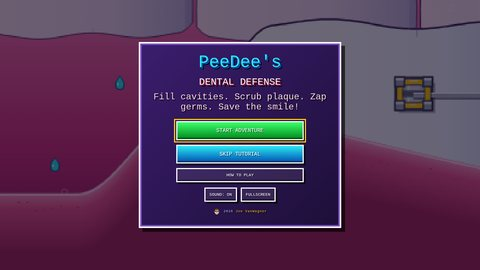
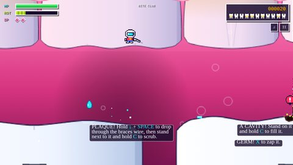
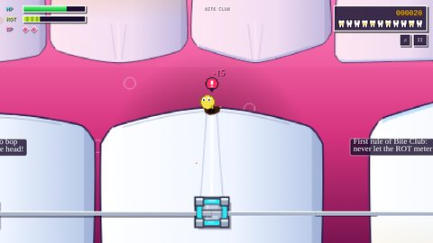
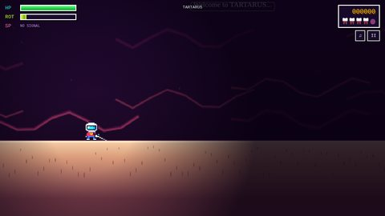
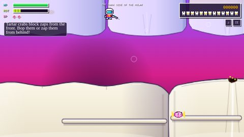
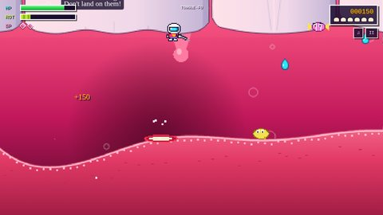

Game · HTML / JavaScript
PeeDee's Dental Defense
Fill cavities. Scrub plaque. Zap germs. Save the smile!
A colorful, 16-bit-style platformer set inside a mouth. You play PeeDee, a tiny dental hero with a zapper, working from the front teeth down under the gums, around the backs of the molars, and across the tongue to face the final boss: a cloud of bad breath that grew from every skipped brushing.
It's a game first, but it sneaks in real oral-health ideas along the way: plaque hides between teeth and along the gumline, untreated plaque hardens into tartar, gum-disease bacteria do their damage below the surface, and a coated tongue feeds bad breath. Every dirty spot you leave behind raises the ROT meter, so the faster you clean, the bigger your bonus.
Play it
Tip: click inside the game first so it can detect your keyboard. On a phone or tablet, on-screen buttons appear. The game also works in the full-screen version.
Controls: arrow keys or A/D to move; Space, Up, W, or Z to jump (hold it to go higher); hold Down and jump to drop through a ledge; X, F, or J to zap; hold C, E, or K while standing still to clean or heal; V, Q, or L for a special attack (two per level); P or Esc to pause; M for sound.
The four levels
- Bite Club (the front teeth, and the tutorial): a full lower jaw of 16 teeth in braces, each shaped like the real thing. Signs teach moving, jumping, filling cavities, and zapping germs, and you learn to drop through the braces wire into the gum pockets between teeth to scrub out plaque.
- Tartarus (under the gums): a dark cave of roots, chasms, and nerve bundles that crackle on and off. Its boss is Gingi, a frantic, armored gum-disease germ. Your zaps bounce off his tartar plates, so you heal infected roots to free oxygen bubbles and knock them into him.
- The Dark Side of the Molar (the backs of the teeth): climb the enamel and tartar ridges on the back of every tooth to scrub tartar at the gumline, past tartar crabs, acid spitters, and sugar bugs.
- Tongue-Fu (the tongue): one squishy, rolling surface that bounces you around. Scrub off the furry coating as you go, then take on the final boss, whose stench shield feeds on that coating until you clean every patch away.
Each level has its own special attack: Floss Frenzy, Power Brush, and a Mouthwash Wave, and all of them clean as they go. (Tartarus is too deep under the gums to get a signal, so you're on your own down there.) When the game ends, you can save a score card or share your score.
Screenshots












How it's built
Plain HTML, CSS, and JavaScript, with no build step: it runs straight from the files, even offline. The world is drawn one pixel at a time on a small canvas and scaled up with hard edges for a crisp pixel-art look, while the text stays sharp at full resolution. The view widens on wide screens and grows taller on phones instead of letterboxing, and all of the music and sound effects are synthesized in the browser. A level checker simulates thousands of runs, jumps, and drops through every level to make sure every dirty spot can be reached and nobody can get stuck.